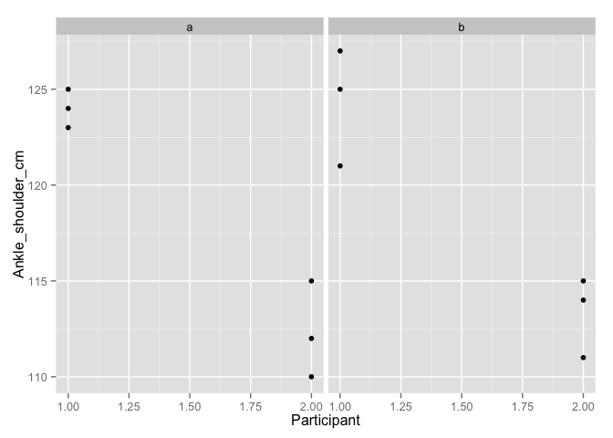

Prelude
VIDEO
Announcements
Quiz 4 next Monday, 12/7
Exam 3 discussion, Exam 4 review 12/9
Exam 4 on Monday, 12/14, 8a, 305 Wagner
Paper/blog posts due this Friday.
Today’s Topics
Measuring the speed of thought
Speed limits on thought and action
Why should I care?
Safe following speeds in driving
False starts in track
False starts in track
Sprinter starts moving < 100 ms (0.1s) after starting gun
Measured by force platforms in starting blocks
Let’s measure!
Groups of n>10
Mixed sex, single sex (if time)
Timer: Erin, or other students
Data scribe: Dr. G
Measure ankle to shoulder (in cm) for each participant, 3x
Let’s measure!
Measure mass reaction time (10+ times)
Ankle condition
Shoulder condition
Calculate average speed of conduction
ankle -> brain -> hand
shoulder -> brain -> hand
speed = distance/time
Register Google Sheet
require(googlesheets) # logs into Google with my account
nerve <- gs_title("psych-260-bbh-203-nerve-conduction-lab")
Load body measure data into RStudio
body <- gs_read(ws=1, nerve)
str(body)
Load times data into RStudio
times = gs_read(ws=2, nerve)
times
Alternative: download data
As .csv, comma-separated value
Mine goes to ~/Downloads
Alternative: Load data into RStudio (alternate way)
body <- read.csv('~/Downloads/psych-260-bbh-203-nerve-conduction-lab - body-measurements.csv')
str(body)## 'data.frame': 12 obs. of 5 variables:
## $ Group : Factor w/ 2 levels "a","b": 1 1 1 1 1 1 2 2 2 2 ...
## $ Participant : int 1 1 1 2 2 2 1 1 1 2 ...
## $ Sex : Factor w/ 2 levels "f","m": 2 2 2 1 1 1 2 2 2 1 ...
## $ Ankle_shoulder_cm: int 125 124 123 110 115 112 127 125 121 111 ...
## $ Measure_num : int 1 2 3 1 2 3 1 2 3 1 ...
Alternative: Load data into RStudio
times <- read.csv('~/Downloads/psych-260-bbh-203-nerve-conduction-lab - time-measurements.csv')
str(times)## 'data.frame': 40 obs. of 4 variables:
## $ Group : Factor w/ 2 levels "a","b": 1 1 1 1 1 1 1 1 1 1 ...
## $ Trial_num : int 1 2 3 4 5 6 7 8 9 10 ...
## $ Ankle_shoulder: Factor w/ 2 levels "ankle","shoulder": 2 2 2 2 2 2 2 2 2 2 ...
## $ Time_secs : num 5 4 6 5.5 4.75 5.25 6.24 4.8 6.5 4.2 ...
Get ready to plot
# Load libraries
require(ggplot2)
require(dplyr)
Plot body measurements
qplot(x=Participant, y=Ankle_shoulder_cm, data=body, facets = . ~ Group)

Average body measurements within participants
mean_length <- body %>%
group_by(Group, Participant) %>%
summarize(mean_part_cm = mean(Ankle_shoulder_cm))
mean_length## Source: local data frame [4 x 3]
## Groups: Group
##
## Group Participant mean_part_cm
## 1 a 1 124.0000
## 2 a 2 112.3333
## 3 b 1 124.3333
## 4 b 2 113.3333
Sum body measurements across groups
total_length <- mean_length %>%
group_by(Group) %>%
summarize(total_cm = sum(mean_part_cm))
total_length## Source: local data frame [2 x 2]
##
## Group total_cm
## 1 a 236.3333
## 2 b 237.6667
Plot times
qplot(x=Trial_num, y=Time_secs, data=times, facets = . ~ Group, color=Ankle_shoulder, geom=c("point", "smooth"))## geom_smooth: method="auto" and size of largest group is <1000, so using loess. Use 'method = x' to change the smoothing method.
## geom_smooth: method="auto" and size of largest group is <1000, so using loess. Use 'method = x' to change the smoothing method.
Calculate time difference
ankle_times <- times %>%
filter(Ankle_shoulder=="ankle") %>%
select(Time_secs)
shoulder_times <- times %>%
filter(Ankle_shoulder=="shoulder") %>%
select(Time_secs)
times$Secs_diff <- ankle_times$Time_secs - shoulder_times$Time_secs
Merge dataframes so can plot speeds
merged <- merge(total_length, times, by="Group")
merged## Group total_cm Trial_num Ankle_shoulder Time_secs Secs_diff
## 1 a 236.3333 1 shoulder 5.00 5.00
## 2 a 236.3333 2 shoulder 4.00 7.00
## 3 a 236.3333 3 shoulder 6.00 6.00
## 4 a 236.3333 4 shoulder 5.50 5.00
## 5 a 236.3333 5 shoulder 4.75 6.50
## 6 a 236.3333 6 shoulder 5.25 4.75
## 7 a 236.3333 7 shoulder 6.24 3.51
## 8 a 236.3333 8 shoulder 4.80 4.80
## 9 a 236.3333 9 shoulder 6.50 3.30
## 10 a 236.3333 10 shoulder 4.20 5.30
## 11 a 236.3333 1 ankle 10.00 4.30
## 12 a 236.3333 2 ankle 11.00 7.70
## 13 a 236.3333 3 ankle 12.00 4.80
## 14 a 236.3333 4 ankle 10.50 5.10
## 15 a 236.3333 5 ankle 11.25 6.70
## 16 a 236.3333 6 ankle 10.00 5.30
## 17 a 236.3333 7 ankle 9.75 3.70
## 18 a 236.3333 8 ankle 9.60 4.70
## 19 a 236.3333 9 ankle 9.80 3.00
## 20 a 236.3333 10 ankle 9.50 4.50
## 21 b 237.6667 1 shoulder 6.00 5.00
## 22 b 237.6667 2 shoulder 3.00 7.00
## 23 b 237.6667 3 shoulder 7.00 6.00
## 24 b 237.6667 4 shoulder 5.50 5.00
## 25 b 237.6667 5 shoulder 4.75 6.50
## 26 b 237.6667 6 shoulder 5.00 4.75
## 27 b 237.6667 7 shoulder 6.20 3.51
## 28 b 237.6667 8 shoulder 5.00 4.80
## 29 b 237.6667 9 shoulder 6.20 3.30
## 30 b 237.6667 10 shoulder 4.70 5.30
## 31 b 237.6667 1 ankle 10.30 4.30
## 32 b 237.6667 2 ankle 10.70 7.70
## 33 b 237.6667 3 ankle 11.80 4.80
## 34 b 237.6667 4 ankle 10.60 5.10
## 35 b 237.6667 5 ankle 11.45 6.70
## 36 b 237.6667 6 ankle 10.30 5.30
## 37 b 237.6667 7 ankle 9.90 3.70
## 38 b 237.6667 8 ankle 9.70 4.70
## 39 b 237.6667 9 ankle 9.20 3.00
## 40 b 237.6667 10 ankle 9.20 4.50
Calculate speeds and add to dataframe
merged <- merged %>%
mutate(cmPsec=total_cm/Secs_diff)
merged## Group total_cm Trial_num Ankle_shoulder Time_secs Secs_diff cmPsec
## 1 a 236.3333 1 shoulder 5.00 5.00 47.26667
## 2 a 236.3333 2 shoulder 4.00 7.00 33.76190
## 3 a 236.3333 3 shoulder 6.00 6.00 39.38889
## 4 a 236.3333 4 shoulder 5.50 5.00 47.26667
## 5 a 236.3333 5 shoulder 4.75 6.50 36.35897
## 6 a 236.3333 6 shoulder 5.25 4.75 49.75439
## 7 a 236.3333 7 shoulder 6.24 3.51 67.33143
## 8 a 236.3333 8 shoulder 4.80 4.80 49.23611
## 9 a 236.3333 9 shoulder 6.50 3.30 71.61616
## 10 a 236.3333 10 shoulder 4.20 5.30 44.59119
## 11 a 236.3333 1 ankle 10.00 4.30 54.96124
## 12 a 236.3333 2 ankle 11.00 7.70 30.69264
## 13 a 236.3333 3 ankle 12.00 4.80 49.23611
## 14 a 236.3333 4 ankle 10.50 5.10 46.33987
## 15 a 236.3333 5 ankle 11.25 6.70 35.27363
## 16 a 236.3333 6 ankle 10.00 5.30 44.59119
## 17 a 236.3333 7 ankle 9.75 3.70 63.87387
## 18 a 236.3333 8 ankle 9.60 4.70 50.28369
## 19 a 236.3333 9 ankle 9.80 3.00 78.77778
## 20 a 236.3333 10 ankle 9.50 4.50 52.51852
## 21 b 237.6667 1 shoulder 6.00 5.00 47.53333
## 22 b 237.6667 2 shoulder 3.00 7.00 33.95238
## 23 b 237.6667 3 shoulder 7.00 6.00 39.61111
## 24 b 237.6667 4 shoulder 5.50 5.00 47.53333
## 25 b 237.6667 5 shoulder 4.75 6.50 36.56410
## 26 b 237.6667 6 shoulder 5.00 4.75 50.03509
## 27 b 237.6667 7 shoulder 6.20 3.51 67.71130
## 28 b 237.6667 8 shoulder 5.00 4.80 49.51389
## 29 b 237.6667 9 shoulder 6.20 3.30 72.02020
## 30 b 237.6667 10 shoulder 4.70 5.30 44.84277
## 31 b 237.6667 1 ankle 10.30 4.30 55.27132
## 32 b 237.6667 2 ankle 10.70 7.70 30.86580
## 33 b 237.6667 3 ankle 11.80 4.80 49.51389
## 34 b 237.6667 4 ankle 10.60 5.10 46.60131
## 35 b 237.6667 5 ankle 11.45 6.70 35.47264
## 36 b 237.6667 6 ankle 10.30 5.30 44.84277
## 37 b 237.6667 7 ankle 9.90 3.70 64.23423
## 38 b 237.6667 8 ankle 9.70 4.70 50.56738
## 39 b 237.6667 9 ankle 9.20 3.00 79.22222
## 40 b 237.6667 10 ankle 9.20 4.50 52.81481
Plot speeds vs. Trial_num
qplot(x=Trial_num, y=cmPsec, data=merged, facets = . ~ Group, geom=c("point", "smooth"))## geom_smooth: method="auto" and size of largest group is <1000, so using loess. Use 'method = x' to change the smoothing method.
## geom_smooth: method="auto" and size of largest group is <1000, so using loess. Use 'method = x' to change the smoothing method.
Plot speeds by Group
qplot(x = factor(Group), y=cmPsec, data=merged, geom="boxplot")
Next steps
Write up (2-4 pp, double-spaced)
Introduction
Methods
Results
Discussion
Worth 15 points (extra credit or replace paper/blog)